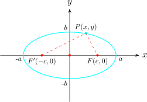
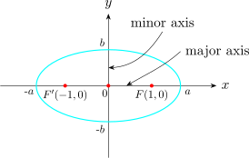
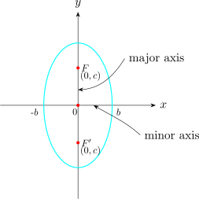

1.3 Ellipse
An ellipse is a locus of points \(P\) such that the sum of the distance from \(P\) to two fixed points \(F\) and \(F'\) (called the foci) is a constant.

\[F'P + FP = 2a\] From the diagram, the locus of \(P\) is an ellipse if \(F'P + FP = 2a\). Thus,
\[ \sqrt {(x + c)^2 + ( y -0)^2} + \sqrt {(x-c)^2 + (y-0)^2} = 2a\]
\[\implies \hspace {0.5cm} \Big (\sqrt {(x + c)^2 + (y - 0)^2}\Big )^2 = \Big (2a - \sqrt {(x - c)^2 + (y - 0)^2}\Big )^2\]
\[\implies \hspace {0.5cm} x^2 +2cx + c^2 + y^2 = 4a^2 - 4a\sqrt {(x- c)^2 + y^2} + (x^2 -2cx + c^2 +y^2)\]
\[\implies \hspace {0.5cm} \frac {4a\sqrt {(x - c)^2 + y^2}}{4} = \frac {4a^2}{4} - \frac {4cx}{4}\]
\[\implies \hspace {0.5cm} \Big (a\sqrt {(x - c)^2 + y^2}\Big )^2 = \Big (a^2 - cx\Big )^2\]
\[\implies \hspace {0.5cm} a^2\Big [(x-c)^2 + y^2\Big ] = a^4 -2a^2cx + c^2x^2\]
\[\implies \hspace {0.5cm} a^2x^2 - 2a^2cx + a^2c^2 + a^2y^2 = a^4 -2a^2cx + c^2x^2\]
\[\implies \hspace {0.5cm} a^2x^2 + a^2c^2 + a^2y^2 = a^4 + c^2x^2\]
\[\implies \hspace {0.5cm} a^2x^2 - c^2x^2 + a^2y^2 = a^4 - a^2c^2\]
\[\implies \hspace {0.5cm} x^2(a^2 -c^2) + a^2 y^2 = a^2 (a^2 - c^2)\]
Let \(a^2 - c^2 = b^2\) thus we have \[b^2x^2 + a^2y^2 = a^2b^2\]
\[\boxed {\implies \hspace {0.5cm} \dfrac {x^2}{a^2} + \dfrac {y^2}{b^2} = 1}\]
which is the standard equation of an ellipse whose foci lie on the \(x-\)axis.
Write the standard equation of the ellipse with \(F(1,0)\) \(, \hspace {0.2cm} F(-1,0)\) and major axis 5.
Solution.

\[c = 1\hspace {0.2cm} ,\hspace {0.2cm} 2a= 5\hspace {0.3cm}\implies \hspace {0.3cm} a = \dfrac {5}{2}\]
\[b^2 = a^2 - c^2 \hspace {0.3cm} \implies \hspace {0.3cm} b^2 = \Big (\dfrac {5}{2}\Big )^2 - (1)^2 = \frac {21}{4}\]
Therefore, the equation of this ellipse is \[\dfrac {x^2}{25/4} + \dfrac {y^2}{21/4}= 1\]
\[\implies \hspace {0.5cm} \frac {4x^2}{25}+ \frac {4y^2}{21}=1\]
If an ellipse has its foci on the \(y-\)axis, then its standard equation is given by \(\boxed {\dfrac {x^2}{b^2} + \dfrac {y^2}{a^2}=1}\)

An ellipse has its foci on the \(y-\)axis and its centre at origin. The distance between the foci is 6 and the major axis is of length 10. Find its equation.
Solution.
\(\dfrac {2c}{2}=\dfrac {6}{2} \implies c = 3\hspace {0.3cm}\) Thus the foci are \(F(0,3)\) and \(F'(0,-3)\).
\[\frac {2a}{2} = \frac {10}{2}\hspace {0.3cm}\implies \hspace {0.3cm} a = 5\]
\[b^2 = a^2 - c^2 = 25 - 9 = 16\]
\[\implies \hspace {0.5cm} \frac {x^2}{16} + \frac {y^2}{25} = 1\]
Questions on this section
Stuck on something here? Ask below and it stays attached to this topic.